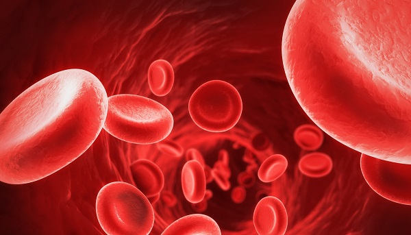

Il sangue
Il sangue è l'intermedio indispensabile tra il nostro corpo e l'ambiente che ci circonda: sospinto dal cuore, attraverso un sistema di canali o vasi, distinti in arterie, vene e capillari dà alle cellule le sostanze alimentari e l'ossigeno, ed elimina le sostanze di rifiuto che si producono nell'organismo.
La composizione
Il sangue è un tessuto, per circa il 55% liquido (plasma) e per il restante 45% composto principalmente da tre specie di elementi cellulari:
- - globuli rossi
- - globuli bianchi
- - piastrine
Il sangue si distingue in arterioso e venoso: l'arterioso è di colore rosso vivo e ricco di ossigeno, il venoso è di colore rosso cupo e carico di anidride carbonica.
Il plasma
È formato prevalentemente da acqua, che mantiene in sospensione proteine, sostanze minerali e sostanze ottenute dalla digestione degli alimenti: raccoglie le sostanze di rifiuto, mantiene costante il volume del sangue attraverso i fattori di coagulazione e il fibrinogeno (sostanza di natura proteica che per effetto di reazioni enzimatiche si trasforma in fibrina determinando la coagulazione e l’arresto della fuoriuscita di sangue).
Globuli rossi
Ogni persona ne può contare da 4 a 5,8 milioni per millimetro cubo di sangue: trasportano l'ossigeno prelevato negli alveoli polmonari e sono prodotti (come i globuli bianchi e le piastrine) a partire da cellule indifferenziate presenti nel midollo osseo, dette cellule staminali.
Globuli bianchi
In ogni millimetro cubo di sangue possono variare da 4.500 a 10.500 per millimetro cubo. Al microscopio appaiono incolori e trasparenti: hanno il compito di assimilare e distruggere i batteri o altri corpuscoli estranei e dannosi all'organismo. Sono fabbricati nella milza, nelle ghiandole linfatiche e nel midollo osseo.
Piastrine
Sono frammenti di cellule prodotte dal midollo osseo e hanno parte attiva nella coagulazione del sangue in caso di ferite o emorragie: ogni millimetro cubo di sangue ne può contenere da 150 a 400 mila.
I gruppi sanguigni
Il sangue si differenzia in 4 tipi fondamentali:
- - A
- - B
- - AB
- - 0 (zero)
Ogni gruppo si differenzia per le particolari sostanze presenti sulla superficie dei globuli rossi, ed è definito positivo o negativo dalla presenza o meno del fattore RH. La presenza dei gruppi sanguigni è così suddivisa sul territorio italiano: 40% gruppo 0 (zero); 36% gruppo A; 17% gruppo B; 7% gruppo AB; l'85% della popolazione italiana è definita RH+ e il 15% RH-.
Torna su